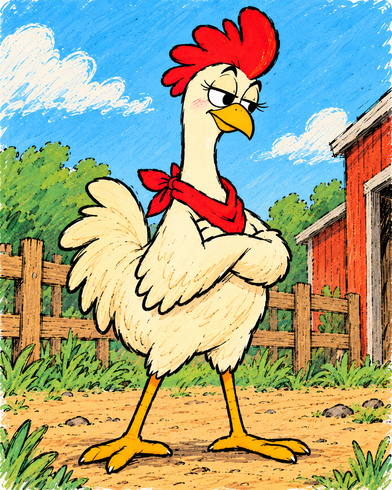
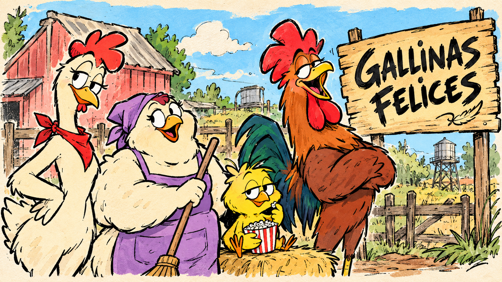
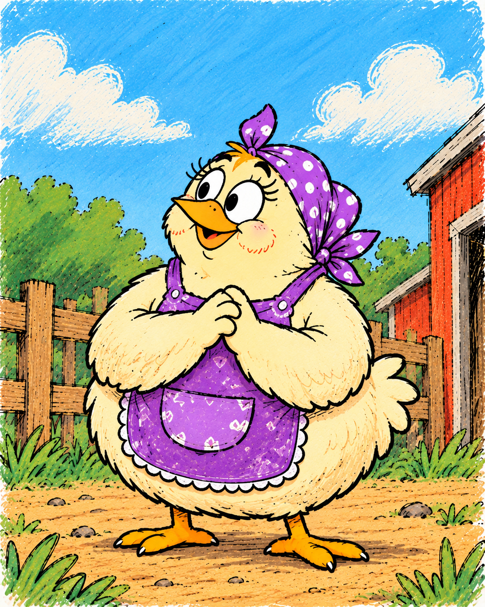
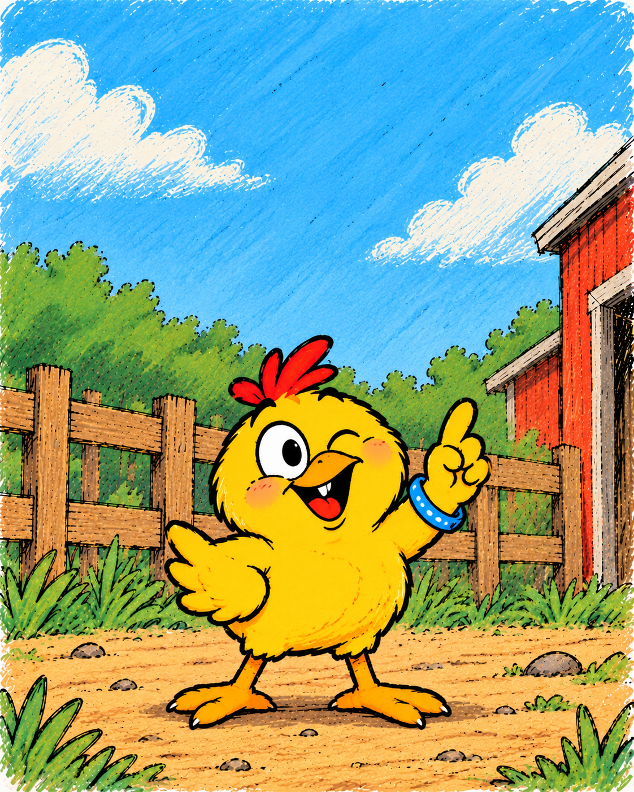
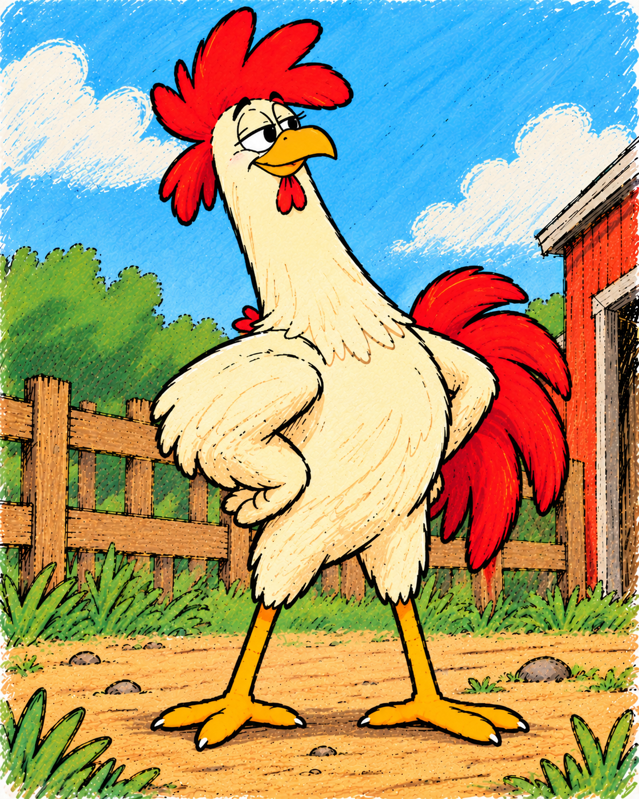

Pía
Observadora, directa y siempre dispuesta a hacer la pregunta incómoda.

Una granja. Muchas gallinas. Y algunas preguntas incómodas.
Gallinas Felices es una historieta de humor y sátira protagonizada por Pía, Berta, Tato y Don Gallo.
Entre el trabajo, los discursos y las situaciones de todos los días, la vida en la granja no siempre es tan simple como parece.
Acá vas a poder encontrar las historias publicadas de Gallinas Felices.
Conocé a Pía, Berta, Tato, Don Gallo y al resto de los habitantes de la granja.

Observadora, directa y siempre dispuesta a hacer la pregunta incómoda.

Trabajadora y tranquila, conoce muy bien cómo funcionan las cosas en la granja.

Pequeño, pícaro y siempre listo para encontrarle el lado divertido a todo.

La voz de autoridad de la granja, con una presencia difícil de ignorar.